FXデモトレードおすすめ比較｜仮想資金・利用期限で比べる11社
2026年11月25日更新
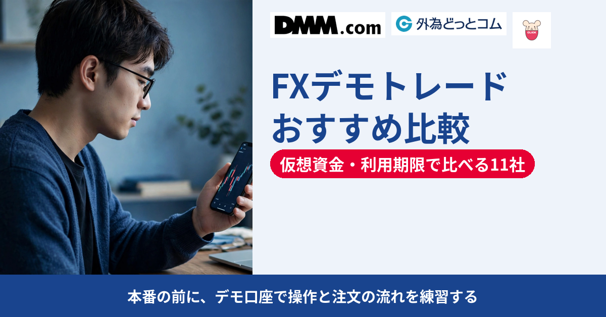
本番のお金を使う前に、注文の出し方だけでも練習しておきたい
取引ツールの画面を初めて触るので、損をしない形で慣れておきたい
デモ口座は会社ごとに仮想資金や期限が違うと聞いたけれど、違いが分からない
FXのデモトレードは、仮想資金を使って本番に近い環境で取引を練習できる仕組みです。実際のお金は動かないため、注文の流れやツールの操作、チャートの見方を確認するのに向いています。
ただし、デモ口座の条件は会社ごとに異なります。仮想資金の金額、利用できる期限、スマホアプリで使えるかどうかが会社によって違うため、始める前に比べておくことが大切です。このページでは、デモ口座を用意している国内のFX会社11社について、仮想資金と利用期限を各社の公式情報で確認し、一覧で比べられるようにまとめました。
投資にかかる手数料、リスク等について
店頭外国為替証拠金取引は、元本及び利益が保証されたものではありません。お取引の対象となる通貨ペアの価格の変動、スワップポイントの変動または、受け払いの逆転、各国の金融政策、金融指標の数値の変動によっては損失が生じることとなります。
お預けいただく証拠金額に比べてお取引可能な金額が大きいため、その損失は預託された証拠金の額を上回るおそれがあります。アカウント管理費及び取引手数料は無料です。
注文の際に必要となる証拠金は、各通貨ペアとも取引の額に対して、個人アカウント、法人アカウントとも最低4％以上の証拠金が必要となります。なお、法人アカウントの場合は、金融先物取引業協会が算出した通貨ペアごとの為替リスク想定比率を取引の額に乗じて得た額と、取引の額に4％を乗じて得た額のどちらか高い額以上の証拠金が必要となります。為替リスク想定比率とは、金融商品取引業等に関する内閣府令第117条第27項第1号に規定される定量的計算モデルを用い算出します。
当社の提示するビッド価格（売付価格）とアスク価格（買付価格）には差（スプレッド）があります。相場急変動等により、スプレッド幅が拡大、または、意図した取引ができない可能性があります。
上記のリスクは、お取引の典型的なリスクを示したものです。お取引に際しては契約締結前交付書面及び約款をよくお読みいただき、それら内容をご理解のうえ、お取引の最終決定は、お客様ご自身の判断と責任で行ってください。
※当社Webサイトまたは取引ツール等における「アカウント」という表記は「口座」と同義です。あらかじめご了承ください。
（下記の会社情報は2026年11月25日現在の情報に基づきます）
株式会社DMM.com証券
第一種金融商品取引業者 第二種金融商品取引業者
関東財務局長（金商）第1629号
商品先物取引業者
加入協会等：日本証券業協会/一般社団法人金融先物取引業協会/一般社団法人第二種金融商品取引業協会/日本投資者保護基金/日本商品先物取引協会/一般社団法人日本暗号資産等取引業協会
まず試すなら DMM FXのデモから
DMM FXのデモは、仮想資金500万円・利用期限は登録から約3ヶ月です。純資産が50万円を割り込むと仮想資金が自動で500万円に戻る仕組みがあるため、練習の途中で資金が尽きて止まってしまう心配が小さいのが特徴です。メールアドレスとニックネームの登録で始められ、スマホアプリとPCの両方で練習できます。
DMM FX公式サイトはこちら※上のボタンは本取引口座の開設ページに進みます。デモだけを使いたい場合は、公式サイト内のデモ取引の申込みページから登録してください。デモ取引は仮想資金での練習であり、実際のお金は動きません。
デモ口座のあるFX会社 一覧比較
デモ口座の仮想資金と利用期限を一覧にしました。各社の公式ページで確認した内容です（2026年11月25日時点）。
| FX会社 | 仮想資金 | 利用期限 | 特徴 | 公式サイト |
|---|---|---|---|---|
| 500万円 | 約3ヶ月 | 残高が減ると自動で500万円に回復 | 公式サイト | |
| 500万円 | 90日間 | デモコンテスト「バーチャルFX」開催 | 公式サイト | |
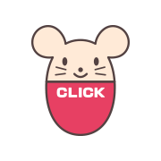 | 10万〜9,999万円※1 | 1ヶ月間 | スマホのデモは登録不要で開始可 | 公式サイト |
| 6,000万円 | 期限の定めなし※2 | FXのほか株価指数・商品CFDも試せる | 公式サイト | |
| 300万円 | 30日間※3 | MT5対応のデモ口座 | 公式サイト | |
| FXTF | 100万円 | 実質無期限※4 | MT4のデモ口座を用意 | 公式サイト |
| ヒロセ通商 | 1万〜1,000万円 | 約90日間 | 仮想レートで土日も利用可能 | 公式サイト |
| JFX | 1万〜1,000万円 | 約3ヶ月 | 仮想レートで土日も利用可能 | 公式サイト |
| GMO外貨 | 10万〜1億円 | 約1ヶ月 | 仮想資金を細かく設定できる | 公式サイト |
| 1,000万円 | 公式ページに記載なし | アプリで口座がなくても開始可 | 公式サイト | |
| 300万円 | 期限の定めなし※5 | 自動売買の体験も可能 | 公式サイト |
※1 PCツールでの設定範囲。スマホアプリでは最大1億円まで設定できます。※2 一部銘柄とチャート機能には期間制限があります。※3 継続利用には条件があります。※4 最終ログインから30日経過すると無効になります。※5 約1ヶ月利用がない場合、口座を閉鎖される場合があります。
会社別の詳説
DMM FXのデモ取引は「DMM FX バーチャル」という名前で用意されています。スマホアプリ版とPCブラウザ版があり、仮想資金は500万円、利用できる期間はユーザー登録から約3ヶ月です。
特徴は、純資産が50万円を割り込むと仮想資金が自動的に500万円まで回復する点です。練習中に大きく減らしてしまっても、資金が尽きた状態で止まってしまうことがありません。メールアドレスとニックネームを登録すれば始められる手軽さも、初めての練習に向いています。
スマホアプリ「DMM FX バーチャル」で練習する
スマホでは専用アプリ「DMM FX バーチャル」（iPhone／Android）からデモ取引ができます。実際のレートに近い環境で、チャートの確認から注文までの一連の流れをスマホだけで練習できます。
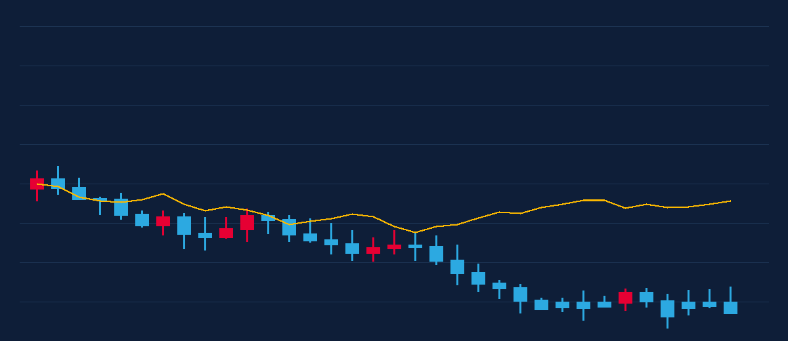
| 仮想資金 | 500万円（純資産50万円未満で自動回復） |
|---|---|
| 利用期限 | 登録から約3ヶ月 |
| 対応環境 | スマホアプリ／PCブラウザ |
※上のボタンは本取引口座の開設ページに進みます。デモだけを使いたい場合は、公式サイト内のデモ取引の申込みページから登録してください。
外為どっとコムのデモ取引は、取引ツール「外貨ネクストネオ」で利用できます。仮想資金は500万円で、デモアカウントの有効期限は登録日から90日間です。ニックネーム・メールアドレス・パスワードの登録で口座が作れます。
本番と同じリアルタイムレートで練習できるほか、デモ口座とは別にエントリーする「バーチャルFX」というコンテストも開催されています。練習の成果を競う形で取り組みたい人にも向いています。
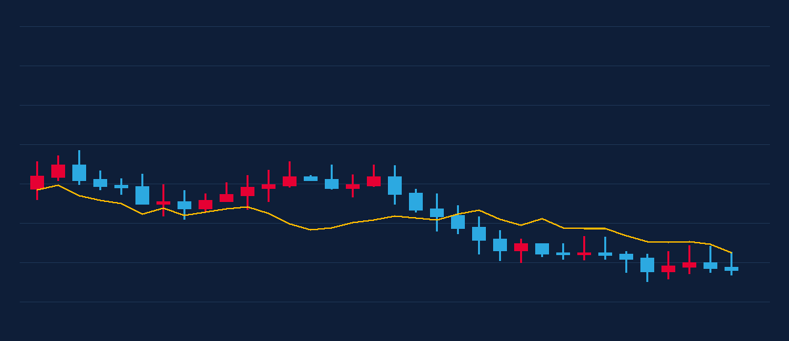
| 仮想資金 | 500万円 |
|---|---|
| 利用期限 | 登録日から90日間 |
| 対応環境 | PC／スマホ（外貨ネクストネオ） |
GMOクリック証券のFXネオには、PCツール用とスマホアプリ用のデモ取引があります。PCでは仮想マネーを10万円から9,999万円のあいだで1万円単位で設定でき、スマホでは最大1億円まで設定できます。
利用期間は登録日から1ヶ月間で、期限の延長はできませんが、終了後に申し込み直すことは可能です。スマホアプリのデモはユーザー登録なしで始められるため、まず画面の使い勝手だけを確認したい場合にも手軽です。
スマホアプリのデモは登録不要
公式アプリをインストールすれば、そのままデモ取引を始められます。PCツールとスマホで仮想マネーの設定範囲が異なる点は、申し込み前に確認しておくと安心です。
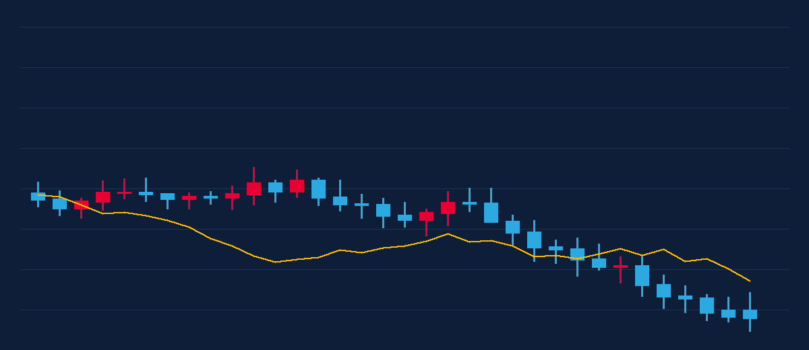
| 仮想資金 | PC：10万〜9,999万円／スマホ：最大1億円（いずれも任意設定） |
|---|---|
| 利用期限 | 登録日から1ヶ月間（再申込可） |
| 対応環境 | PCツール／スマホアプリ |
IG証券のデモ口座では、合計6,000万円の仮想資金が用意されています。FXだけでなく、株価指数や商品などのCFDも同じデモ口座で試せるのが特徴です。
FXデモ口座そのものに利用期限の定めはありませんが、一部の個別株銘柄やProRealTimeチャートなど、期間を過ぎると使えなくなる機能もあります。長く練習する場合は、使いたい機能の条件を公式サイトで確認しておきましょう。
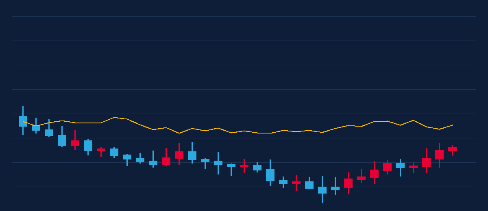
| 仮想資金 | 合計6,000万円 |
|---|---|
| 利用期限 | FXデモ口座に定めなし（一部銘柄・機能に期間制限あり） |
| 対応環境 | PC／スマホ |
OANDA証券のデモ口座は、初期の仮想資金が300万円で、金額は任意に変更できます。利用期間は原則30日間で、継続して使うには本番口座の保有などの条件があります。
取引ツールはMT5やfxTradeに対応しています。本番でMT5を使う予定がある人は、デモのうちにインジケーターや自動売買まわりの操作を確認しておくと移行がスムーズです。
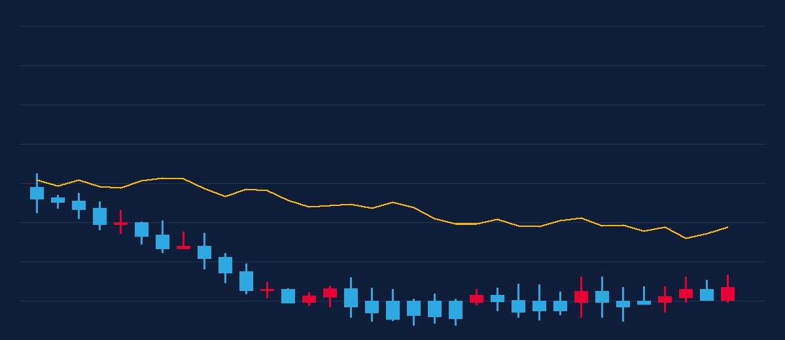
| 仮想資金 | 300万円（金額の変更可） |
|---|---|
| 利用期限 | 原則30日間（継続利用には条件あり） |
| 対応環境 | MT5／fxTrade ほか |
FXTFでは、MT4のデモ口座と「GXバーチャル」という名前のデモ口座が用意されています。MT4デモの仮想資金は100万円です。
利用期限は実質無期限で、最終ログインから30日経過すると無効になりますが、その場合は再び開設できます。MT4の操作やEA（自動売買プログラム）の検証を長期間続けたい人に向いています。
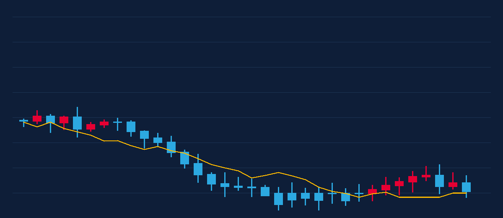
| 仮想資金 | 100万円（MT4デモ） |
|---|---|
| 利用期限 | 実質無期限（最終ログインから30日で無効・再開設可） |
| 対応環境 | MT4／ブラウザ |
ヒロセ通商のデモは「LION FX バーチャル」として、PC版とスマホアプリ版が用意されています。スタート資金は1万円から1,000万円の範囲で自分で設定でき、取引の有効期間は約90日間です。
デモではバーチャルレート（仮想レート）を使うため、土日も取引の練習ができます。ただし、本番の実際のレートとは異なるため、値動きの感覚は本番と少し違う点に注意してください。
スマホアプリ「LION FX 5 バーチャル」
スマホでは専用のバーチャルアプリからデモ取引ができます。本番アプリと近い操作感で練習できるため、外出先でも少しずつ慣れていけます。
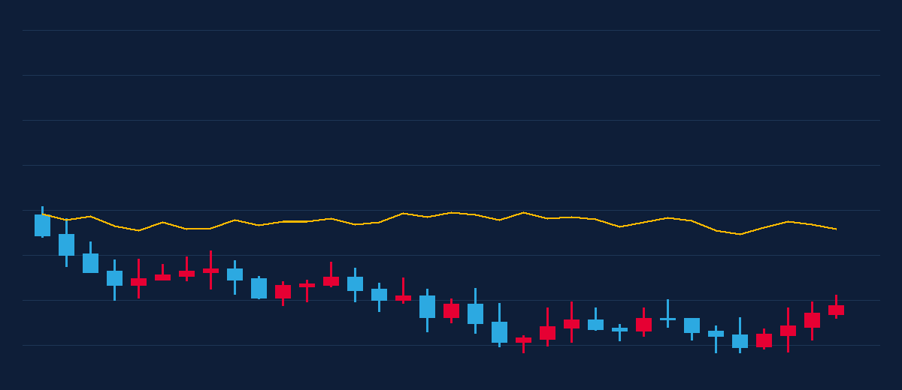
| 仮想資金 | 1万〜1,000万円（任意設定） |
|---|---|
| 利用期限 | 約90日間 |
| 対応環境 | PC／スマホアプリ |
JFXのデモ口座は、取引ツール「MATRIX TRADER」で利用できます。仮想資金は1万円から1,000万円の範囲で設定でき、利用期間は約3ヶ月（約90日）です。
ヒロセ通商と同じくバーチャルレートを使うため土日も練習できます。平日は時間が取りにくい人でも、週末にまとめて操作を確認できるのが利点です。
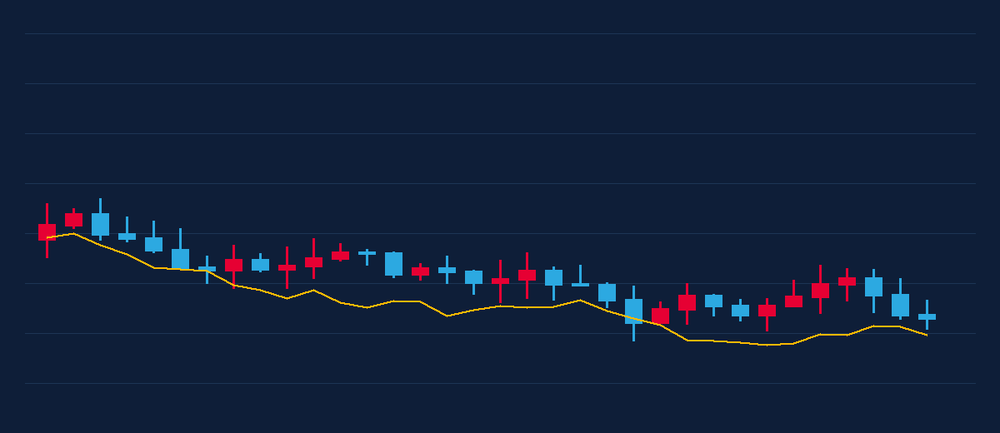
| 仮想資金 | 1万〜1,000万円（任意設定） |
|---|---|
| 利用期限 | 約3ヶ月 |
| 対応環境 | PC／スマホ（MATRIX TRADER） |
GMO外貨の「外貨ex」にもデモ口座があります。仮想資金は10万円から1億円の範囲で設定でき、利用期間は約1ヶ月です。
PCツールとスマホアプリの両方に対応しているため、使う予定の環境に合わせて練習できます。仮想資金を少なめに設定すれば、本番で想定する資金量に近い感覚で練習することもできます。
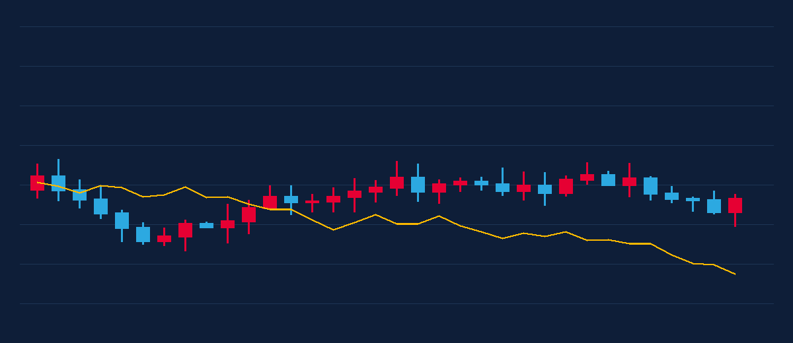
| 仮想資金 | 10万〜1億円（任意設定） |
|---|---|
| 利用期限 | 約1ヶ月 |
| 対応環境 | PCツール／スマホアプリ |
三菱UFJ eスマート証券では、スマホアプリ「三菱UFJ eスマート証券 FXアプリ」のデモ取引機能が使えます。デモ資金は1,000万円です。
口座を持っていなくても、アプリをダウンロードしてソーシャルアカウントでログインすればデモを始められます。公式ページに利用期限の記載はありません。
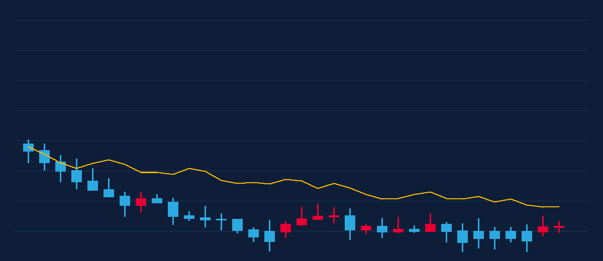
| 仮想資金 | 1,000万円 |
|---|---|
| 利用期限 | 公式ページに記載なし |
| 対応環境 | スマホアプリ |
外為オンラインのデモ口座では、架空のお金300万円を使って取引を練習できます。メールアドレスなどの登録で始められ、利用期限の定めはありません。
ただし、約1ヶ月程度利用がない場合、口座を閉鎖される場合があると公式ページに案内されています。また、自動売買「iサイクル2取引™」もデモで体験できるため、裁量取引と自動売買の両方を試したい人に向いています。
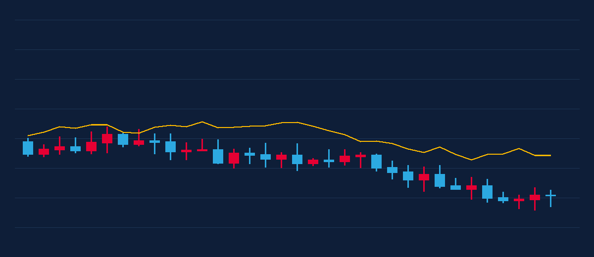
| 仮想資金 | 300万円 |
|---|---|
| 利用期限 | 定めなし（約1ヶ月未利用で閉鎖される場合あり） |
| 対応環境 | PC／スマホ |
デモで練習したあと、本番を始めるには
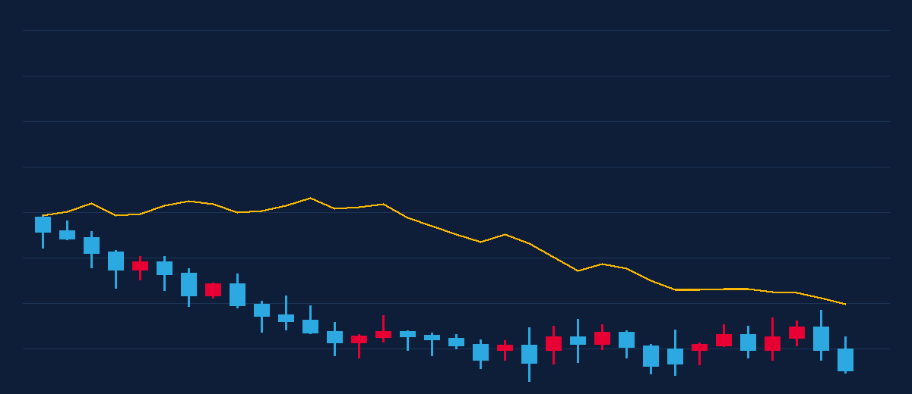
デモで注文の流れに慣れたら、次の段階は本取引口座です。ただし、デモと本番には大きな違いがあります。デモでは損失が出ても実際のお金は減りませんが、本番では相場の変動によって預けた証拠金以上の損失が生じるおそれがあります（詳しくはページ上部の「投資にかかる手数料、リスク等について」をご覧ください）。
本番を始める場合は、次の点を先に確認しておくことをおすすめします。
- 最小の取引単位と、最初に用意する証拠金の額（会社ごとに異なります）
- 契約締結前交付書面と約款の内容（各社の公式サイトで確認できます）
- 損失が出た場合に、自分が許容できる金額の範囲
このページの案内先であるDMM FXで本番を始める場合は、下のボタンから公式サイトで口座開設の手続きを確認できます。デモ口座の申込みとは別の手続きになります。
DMM FX公式サイトはこちら※FXは元本が保証された取引ではありません。お取引の最終決定は、契約締結前交付書面等をご理解のうえ、ご自身の判断と責任で行ってください。
まとめ
FXのデモ口座は、仮想資金の金額も利用期限も会社ごとに異なります。長く練習したい場合は期限の長い会社、資金量を自分で決めたい場合は設定範囲の広い会社、スマホ中心ならアプリのデモが使いやすい会社、というように、練習の目的に合わせて選ぶのが基本です。
このページの案内先はDMM FXです。仮想資金500万円・約3ヶ月のデモで、残高が減っても自動で回復する仕組みがあるため、初めての練習を続けやすい条件がそろっています。まずはデモで注文の流れを確認し、本番に進むかどうかはリスクを理解したうえで判断してください。